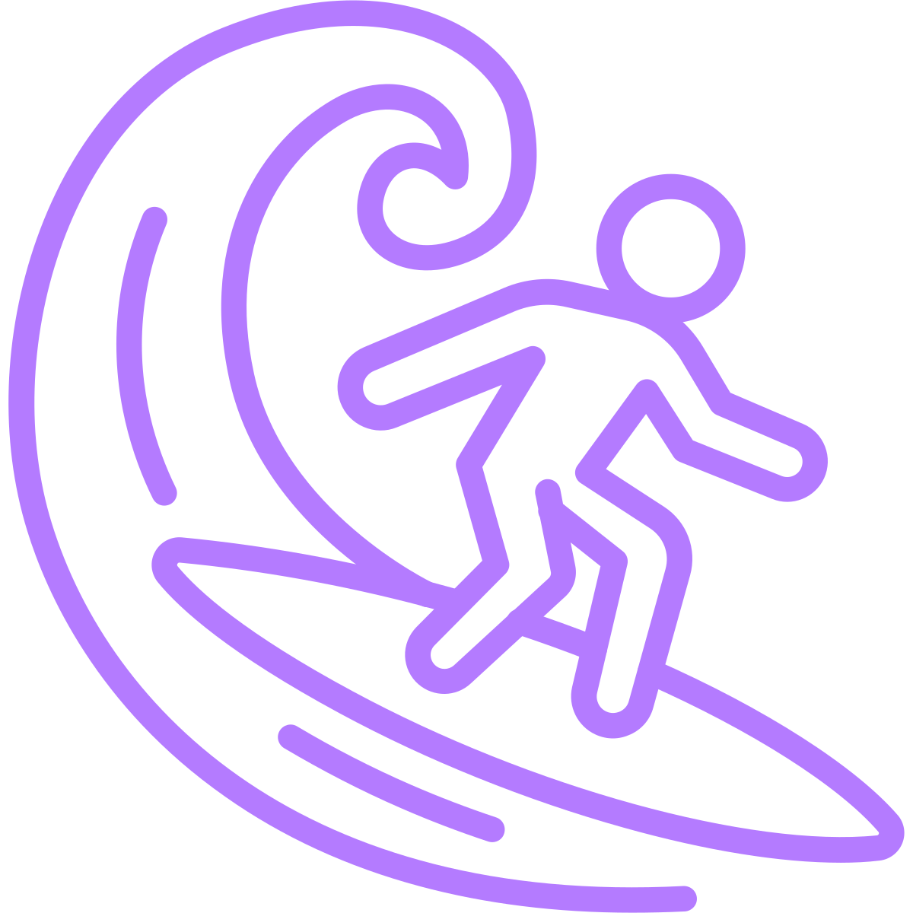
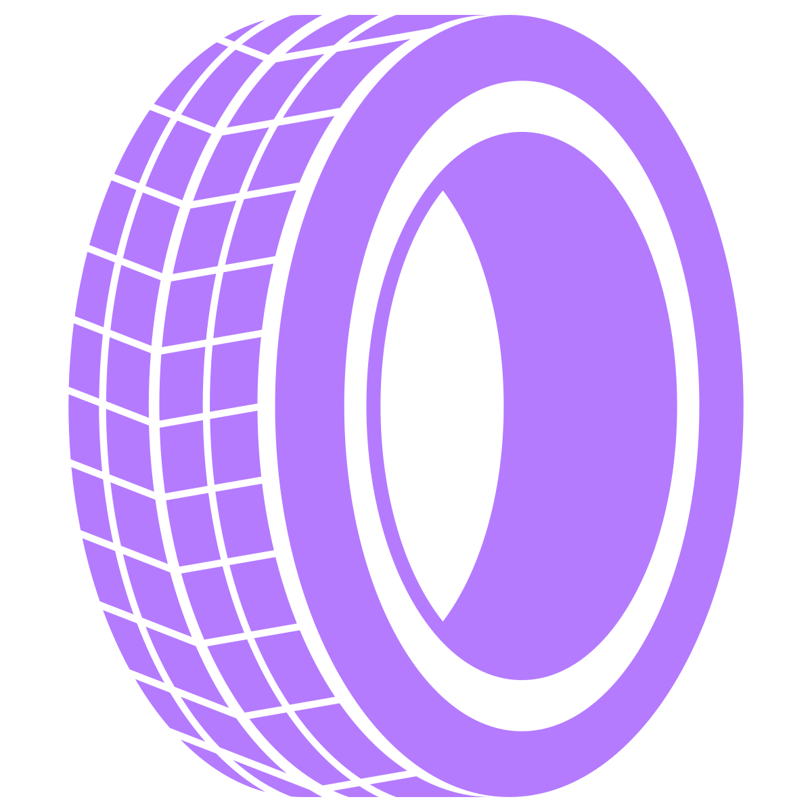

My journey in IT began at the Specialized Institute of Applied Technology, where I studied computer networks and earned a diploma as a Specialized Technician. While the program focused on hardware, I was always more drawn to software and how things work behind the scenes.
That curiosity led me to Applied Computer Science at Thomas More University, where I specialized in AI. Through courses in NLP, computer vision, and web development, I discovered what truly drives me: developing AI-powered systems that solve real problems and add real value to a product. There is something deeply satisfying about taking an idea, turning it into an intelligent system, and seeing it make a difference.
I want to continue working as an AI developer. I find genuine passion and enjoyment in this field, and I want to keep growing, not only technically but also professionally, and why not become an AI engineer in the future. I'm someone who never wants to stand still. There is always more to learn, more to build, and more to explore, whether that means taking on new challenges, pursuing entrepreneurial opportunities, or simply pushing myself further.

Swimming has been part of my life since I was a kid. It's something I do almost every day in the summer. Recently I discovered surfing on a trip to Taghazout, Morocco, and I honestly regret not trying it sooner. But it's not just about the surfing: Taghazout is a place where people come from all over the world, and the community you build there is what makes it special. It quickly became my favourite hobby.

Cars have been a passion of mine for as long as I can remember. Old or new, I love everything about them: the power, the speed, the technology, and the mechanics. For me it's not just about driving. It's about feeling it. I have a special appreciation for old cars because they carry memories and remind us how great classic engineering was. Together with a friend, we buy damaged cars, repair them, and bring them back to life. Looking ahead, I want to start collecting a few old-timers and build project cars as well.